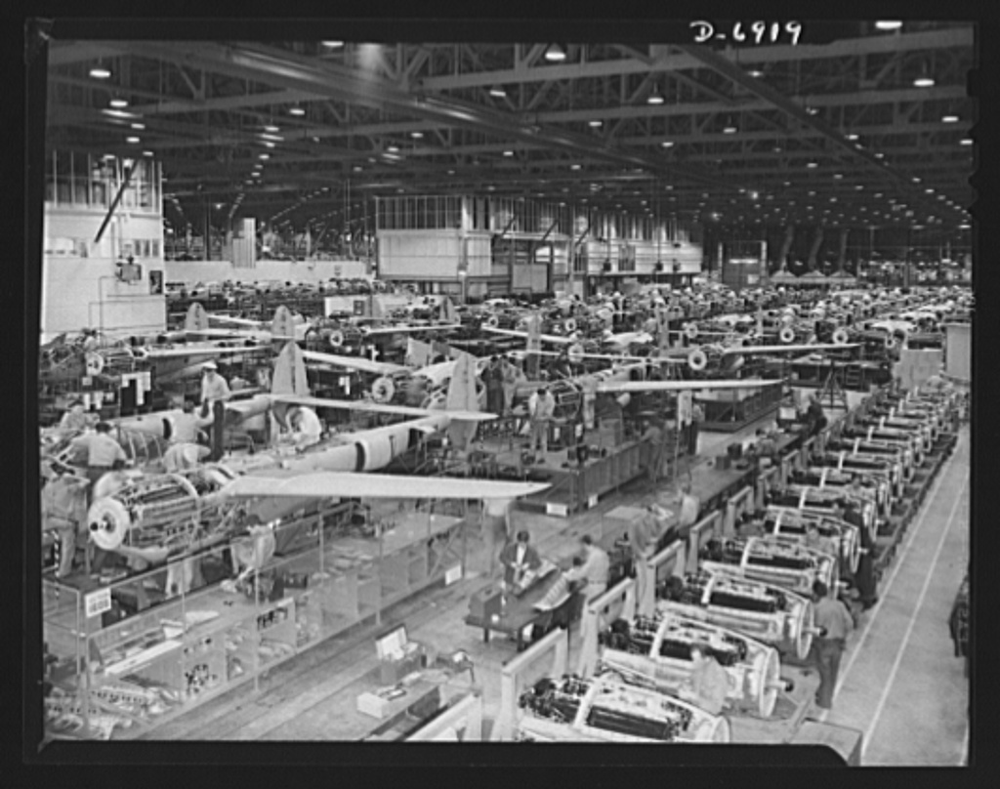

Revolusi Industri 2.0 membawa dampak besar pada kehidupan masyarakat, terutama dalam bidang industri dan transportasi.
Berikut adalah dampak terjadinya Revolusi Industri 2.0:
1. Dampak Industri
- Peningkatan efisiensi dan efektifitas produksi
- Penggunaan teknologi listrik di bidang telekomunikasi dan transportasi
- Munculnya produksi massal
- Peningkatan inovasi pada baja dan besi
2. Dampak transportasi
- Pesawat terbang dan mobil mulai banyak digunakan sebagai alat transportasi
- Penemuan ban berjalan (conveyor belt) untuk memindahkan barang dari satu tempat ke tempat lainnya
- Perkembangan sistem transportasi
Dampak Masyarakat
- Kehidupan agraris bergeser ke industrialis
- Peningkatan standar hidup dan daya beli
- Teknologi baru memainkan peran yang semakin besar dalam kehidupan sehari-hari warga kelas pekerja dan kelas menengah